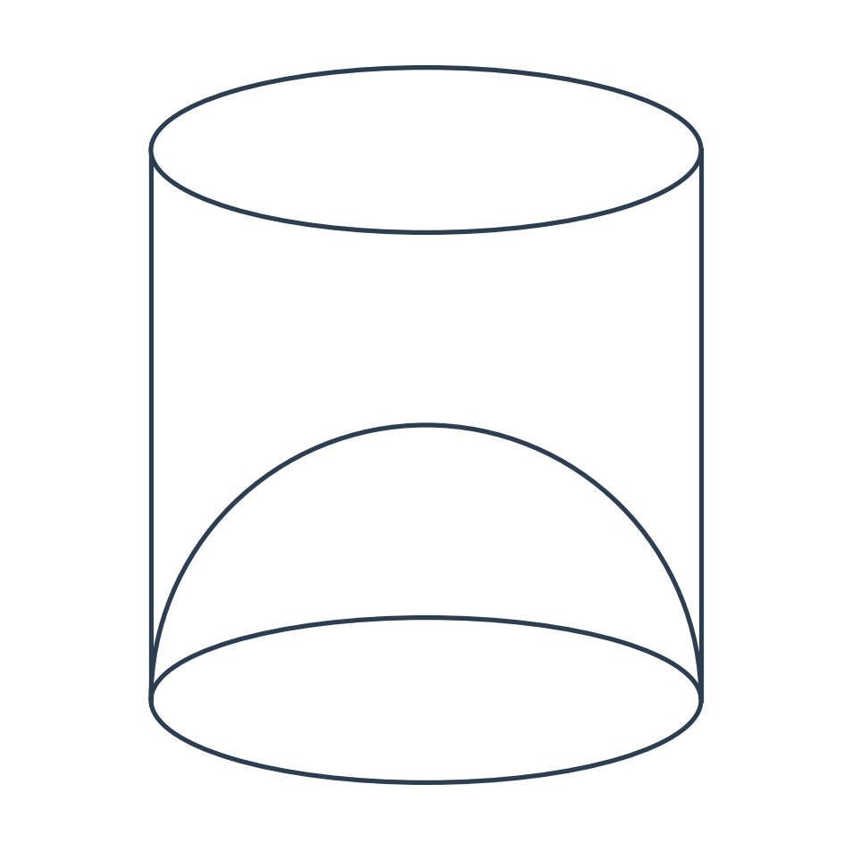
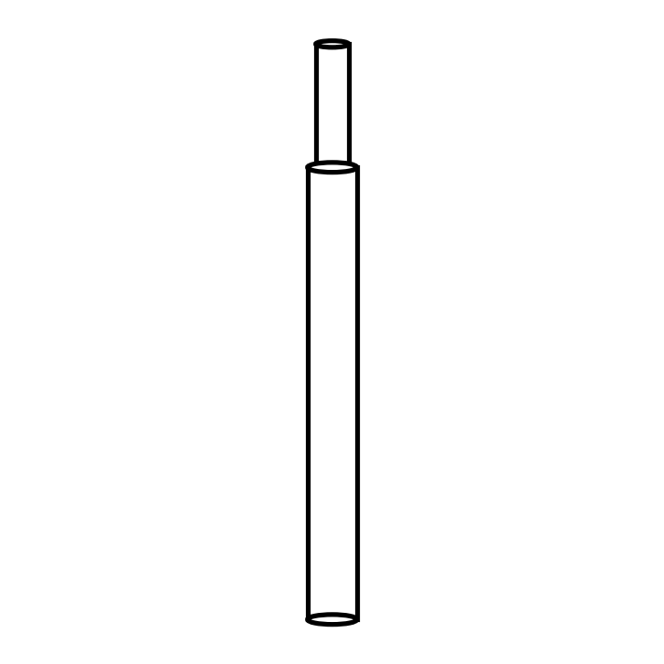
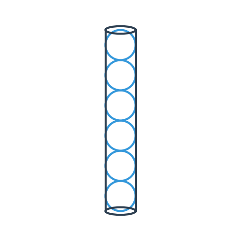
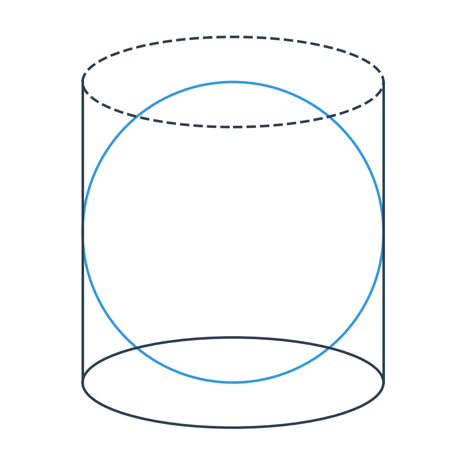

Total Marks: 80
Time: 2 Hours
MARKS DISTRIBUTION: Statistics = 30 | Mensuration = 30 | AP/GP = 20
Q1. [AP - 1 Mark]
The common difference of an A.P. in which a₂₅ - a₁₂ = -52 is:
(a) -4
(b) 4
(c) 2
(d) -2
Q2. [GP - 1 Mark]
For what value of x, the numbers -2/7, x, -7/2 are in G.P.?
(a) 1
(b) 2
(c) 3
(d) None of the above
Q3. [Mensuration - 1 Mark]
The capacity of a cylindrical vessel with hemispherical bottom of radius r and height h is:
(a) πr²(h + 2r/3)
(b) πr²(2h + r/3)
(c) 2πr²(h + r/3)
(d) πr²(h + r/3)
Q4. [Mensuration - 1 Mark]
A solid sphere with a radius of 4 cm is cut into 4 identical pieces by two mutually perpendicular planes passing through its centre. The total surface area of one quarter piece is:
(a) 24π
(b) 32π
(c) 48π
(d) 64π
Q5. [Mensuration - 1 Mark]
A rectangular sheet of paper of size 11 cm × 7 cm is first rotated about the side 11 cm and then about the side 7 cm to form a cylinder. The ratio of their curved surface areas is:
(a) 1:1
(b) 7:11
(c) 11:7
(d) 11π/7 : 7π/11
Q6. [Mensuration - 1 Mark]
The capacity of a cylindrical vessel with a hemispherical portion raised upward at the bottom is:

(a) (1/3)πr²(2h - 3r)
(b) (2/3)πr²(3h - 2r)
(c) (1/3)πr²(3h - 2r)
(d) πr²(2h - 3r)
Q7. [Statistics - 1 Mark]
For the following distribution, the modal class is:
Marks: Less than 10, 20, 30, 40, 50, 60
No. of students: 3, 12, 27, 57, 75, 80
(a) 20-30
(b) 10-20
(c) 30-40
(d) 60-70
Q8. [Statistics - 1 Mark]
For the following distribution, the upper quartile is:
Number: 20, 25, 30, 35, 40, 45, 50
Frequency: 1, 2, 5, 6, 3, 2, 1
(a) 35
(b) 30
(c) 45
(d) 40
Q9. [Statistics - 1 Mark]
If Mode = 45 and Mean = 27, then the Median is:
(a) 30
(b) 33
(c) 36
(d) 39
Q10. [Statistics - 1 Mark]
The mean of first 10 multiples of 3 is:
(a) 15
(b) 16
(c) 16.5
(d) 18
2-MARK QUESTIONS
Q11. [AP - 2 Marks]
If the sum of three numbers in an A.P. is 48, find the middle term. Also find the first term if the common difference is 5.
Q12. [Mensuration - 2 Marks]
A solid metallic sphere of radius 3 cm is melted and recast into a solid right circular cone of 6 cm height. Find the radius of the cone.
Q13. [Mensuration - 2 Marks]
If the curved surface area of a cylinder of height 14 cm is 88 sq. cm, find the diameter of the cylinder.
Q14. [Mensuration - 2 Marks]
A cylinder and a cone have the same height and the same radius of base. If the cylinder has volume 36 cm³, find the volume of the cone.
Q15. [Statistics - 2 Marks]
The mid-values of a frequency distribution are: 15, 20, 25, 30, 35, 40, 45. Find the upper limit of the last class and the class size.
Q16. [Statistics - 2 Marks]
The following numbers are arranged in ascending order. If the median is 25, find the value of x:
11, 13, 15, 19, x + 2, x + 4, 30, 35, 39, 46
3-MARK QUESTIONS
Q17. [AP - 3 Marks]
The 5th term and the 9th term of an Arithmetic Progression are 4 and -12 respectively. Find:
(a) the first term
(b) common difference
(c) sum of 16 terms of the A.P.
Q18. [GP - 3 Marks]
Find the G.P. if the first term is 1 and the sum of 3rd and 5th terms is 90.
Q19. [Mensuration - 3 Marks]
A cone and a sphere having the same radius are melted and recast into a cylinder. The radius and height of the cone are 3 cm and 12 cm respectively. If the radius of the cylinder so formed is 2 cm, find the height of the cylinder.
Q20. [Statistics - 3 Marks]
The mean of the given distribution is 50. Find the missing frequency 'f'.
| Class Interval | 0-20 | 20-40 | 40-60 | 60-80 | 80-100 |
|---|
| Frequency | 6 | f | 8 | 12 | 8 |
|---|
Q21. [Statistics - 3 Marks]
Using step-deviation method, calculate the mean marks of the following data:
| Class Interval | 50-55 | 55-60 | 60-65 | 65-70 | 70-75 | 75-80 | 80-85 | 85-90 |
|---|
| Frequency | 5 | 20 | 10 | 10 | 9 | 6 | 12 | 8 |
|---|
Q22. [Statistics - 3 Marks]
Draw a histogram for the following frequency distribution and hence estimate the mode:
| Wages (Rs.) | 150-200 | 200-250 | 250-300 | 300-350 | 350-400 | 400-450 |
|---|
| No. of workers | 12 | 20 | 35 | 25 | 15 | 10 |
|---|
Q23. [AP/GP - 10 Marks] (4 + 3 + 3)
(a) [4 Marks] If pth, qth and rth terms of an A.P. are a, b and c respectively, prove that:
a(q - r) + b(r - p) + c(p - q) = 0
(b) [3 Marks] The sum of three numbers in an A.P. is 18 and their product is 192. Find the numbers.
(c) [3 Marks] The sum of the first 3 terms of a G.P. is 13/12 and their product is -1. Find the G.P.
Q24. [Mensuration - 10 Marks] (5 + 5)
(a) [5 Marks] A solid iron pole consists of a cylinder of height 220 cm and base diameter 24 cm, which is surmounted by another cylinder of height 60 cm and radius 8 cm. Find the mass of the pole, given that 1 cm³ of iron has approximately 8 g mass. (Use π = 3.14)

(b) [5 Marks] The volume of a conical tent is 2156 m³ and the area of the floor is 616 m². Calculate:
(i) radius of the base
(ii) height of the tent
(iii) length of canvas required to cover the tent if the width is 2 m. (Give your answer to the nearest m. Use π = 22/7)
Q25. [Mensuration - 10 Marks] (4 + 6)
(a) [4 Marks] A spherical ball has a radius of 3.5 cm. Six such spherical balls can fit exactly into a closed cylindrical container. Find:
(i) the volume of 'a' ball correct to 3 significant figures
(ii) the volume of the cylindrical container
(iii) volume of the cylindrical container not occupied by the balls
(iv) the surface area of the cylindrical container (Take π = 22/7)

(b) [6 Marks] A cylindrical can with a base radius of 3.5 cm contains sufficient water so that when a sphere is placed in the can, the water just covers the sphere. Given that the sphere just fits into the can, calculate:
(i) the total surface area of the can, in contact with water when the sphere is in it
(ii) the depth of water in the can before the sphere was put into the can (Take π = 22/7)

Q26. [Statistics - 10 Marks] (4 + 6)
(a) [4 Marks] The mean of the following distribution is 52 and the frequency of class interval 30-40 is 'f'. Find f.
| Class Interval | 10-20 | 20-30 | 30-40 | 40-50 | 50-60 | 60-70 | 70-80 |
|---|
| Frequency | 5 | 3 | f | 7 | 2 | 6 | 13 |
|---|
(b) [6 Marks] The daily wages of 120 workers working at a site are given below:
| Wages (Rs.) | 250-300 | 300-350 | 350-400 | 400-450 | 450-500 | 500-550 | 550-600 |
|---|
| Workers | 8 | 15 | 20 | 30 | 25 | 15 | 7 |
|---|
Draw an ogive for the above distribution on a graph sheet and hence estimate:
(i) the median wages
(ii) the inter-quartile range of wages
(iii) percentage of workers whose daily wage is above Rs.475
Q27. [Statistics - 10 Marks] (4 + 6)
(a) [4 Marks] Draw a histogram for the following distribution and hence estimate the mode:
| Class Interval | 10-20 | 20-30 | 30-40 | 40-50 | 50-60 | 60-70 |
|---|
| Frequency | 5 | 8 | 15 | 12 | 8 | 2 |
|---|
(b) [6 Marks] The weight (in kg) of 200 students was recorded as follows:
| Weight (kg) | 40-45 | 45-50 | 50-55 | 55-60 | 60-65 | 65-70 | 70-75 | 75-80 |
|---|
| No. of Students | 5 | 17 | 22 | 45 | 51 | 31 | 20 | 9 |
|---|
Using a graph sheet draw an ogive for the above distribution and use it to find:
(i) the median weight
(ii) the percentage of students weighing 55 kg or more
(iii) the weight above which the heaviest 30% of the students fall
(iv) the number of students who are under-weight, if 55.70 kg weight is considered as standard weight